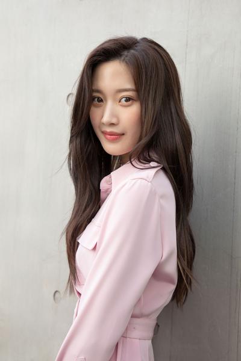
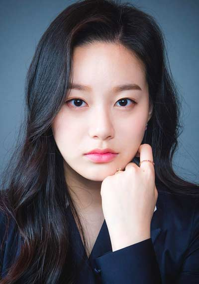
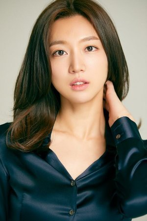
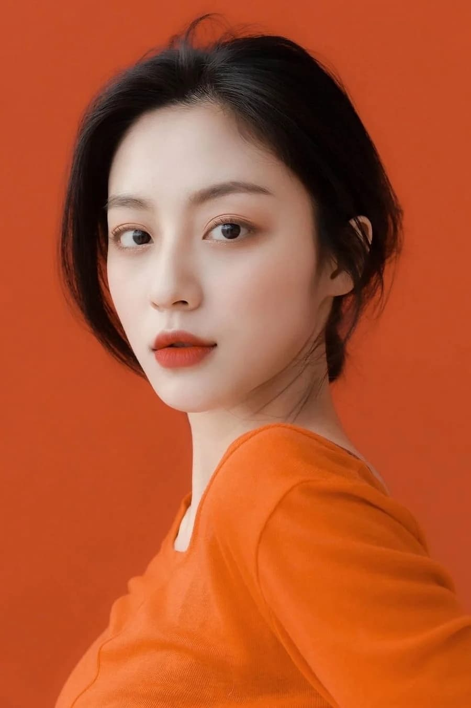
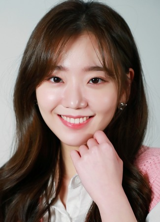
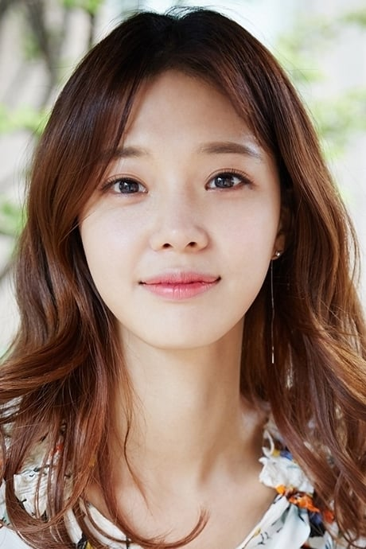
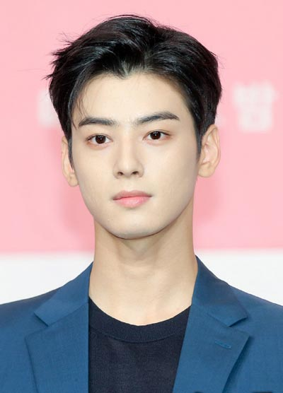
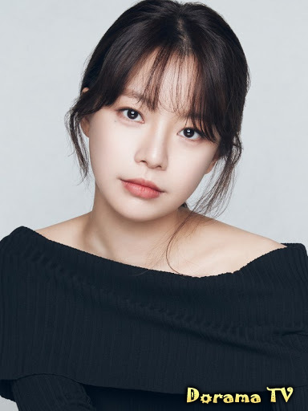
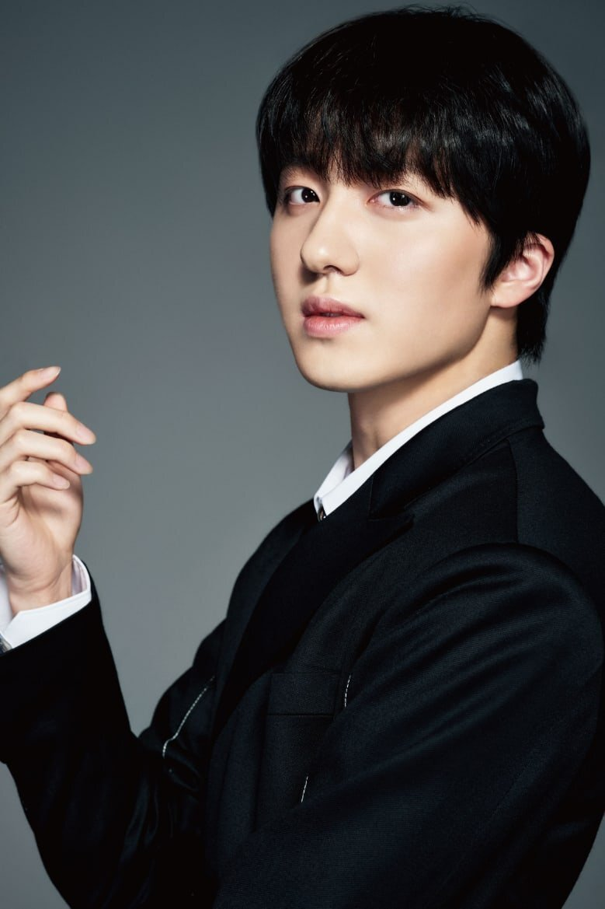

Увеличение изображения

Мун Гаён- немецко-южнокорейская актриса,и модель.Родилась 10 июля 1996 года в Карлсруэ, Германия.Всего фильмов 38,2006—2022
Увеличение изображения

Пак Ю-на-южнокорейская актриса Родилась 23 декабря,26 лет 1997,в Южной Корее.Всего фильмов 17, 2015 — 2023
Увеличение изображения

Ким Хе-юн-южнокорейская актриса,Родилась 10 ноября 27 лет, в 1996 году,Соннам, Кёнгидо.Всего фильмов 41, 2012 — 2024
Увеличение изображения

Кан Мин-а-южнокорейская актриса,Родилась в Сеуле 20 марта,в 1997 году.Всего фильмов 24, 2010—2022
Увеличение изображения

Чон Хе-вон-южнокорейская актриса,Родилась в Пусанe.2 апреля 26 лет, в 1998 году.Всего фильмов 15, 2017 — 2024
Увеличение изображения

Лим Сэ-ми-южнокорейская актриса,Родилась в Сеуле 29 мая 37 лет, в 1987 году.Всего фильмов 33, 2006 — 2024
Увеличение изображения

Чха Ын-у-южнокорейский актер,Родился в Кунпхо, Кёнгидо 30 марта,в 1997 году.Всего фильмов 15, 2014 — 2024
Увеличение изображения

Пак Мин-ён-южнокорейская актриса,Родилась в Сеуле, 4 марта 25 лет,в 1997 году.Всего фильмов 26, 2004 — 2024
Увеличение изображения

Кан Чхан-хи-южнокорейский актер,Родился 17 января 24 года,2000 году.Всего фильмов 26, 2011 — 2022
Сюжет:
18-летняя старшеклассница Им Джу Гён (Мун Гаён), у которой есть комплекс неполноценности в отношении своей внешности, постоянно подвергалась дискриминации со стороны семьи и издевательствам со стороны сверстников из-за того, что считалась «уродливой». Она начинает учиться пользоваться макияжем, просматривая в Интернете обучающие видео по макияжу. Когда она овладевает этим искусством незадолго до перехода в новую школу, её преображение оказывается преобразующим, поскольку она быстро поднимается к славе, а сверстники называют её «богиней».
Несмотря на свою новообретенную популярность, Джу Гён по-прежнему считает себя уродливой и больше всего боится, что сверстники увидят её настоящее лицо. Это, к сожалению, сбывается, когда её лихо красивый одноклассник Ли Су Хо (Чха Ыну), с которым она ранее сталкивалась с обнаженным лицом несколько раз, узнает её вне её макияжа. Су Хо очень популярен среди учениц в школе, но он ненавидит быть постоянным центром внимания. У него есть свои страхи, и он хранит темную тайну — трагический случай в прошлом, — который преследует его в течение долгого времени. Он и его бывший лучший друг Хан Со Джун (Хван Ин Ёп) дистанцировались друг от друга из-за этого инцидента. Джу Гён и её друзья Су Хо и Со Джун вскоре завязывают маловероятные отношения, разгадывая секреты, делясь своей болью, растя вместе и ища утешения друг в друге.
В главных ролях:
Мун Гаён — Лим Джу Гён
Чха Ыну — Ли Су Хо
Хван Ин Ёп — Хан Со Джун
Пак Юна — Кан Су Джин